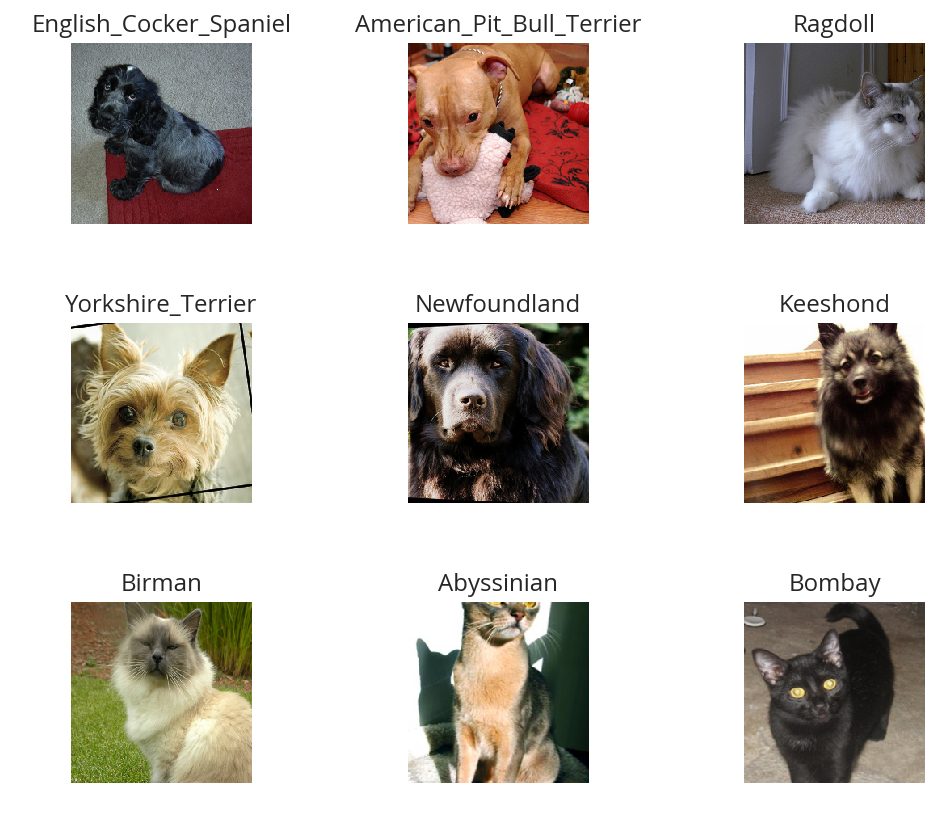
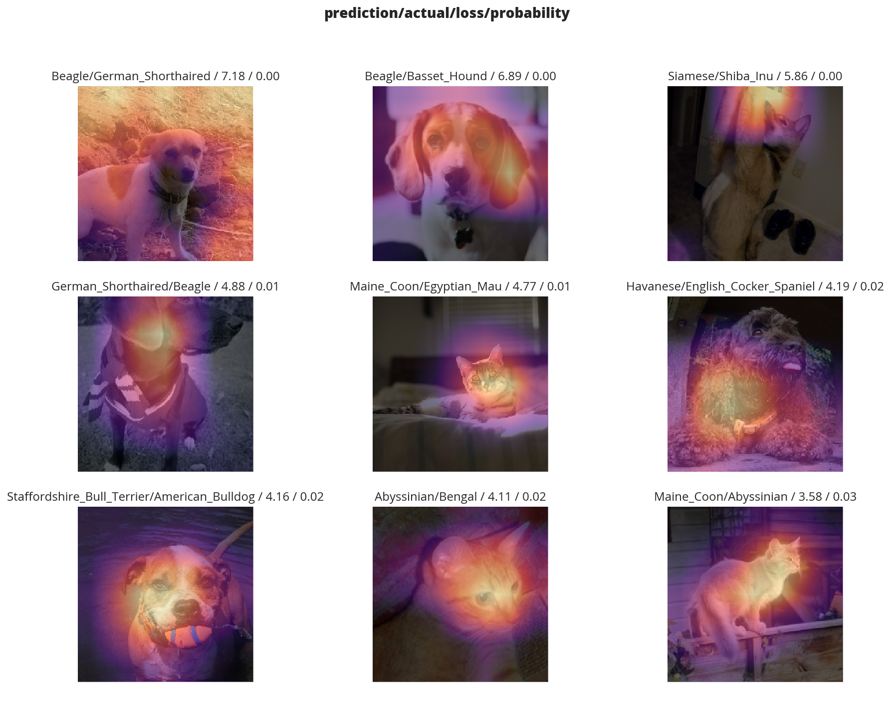
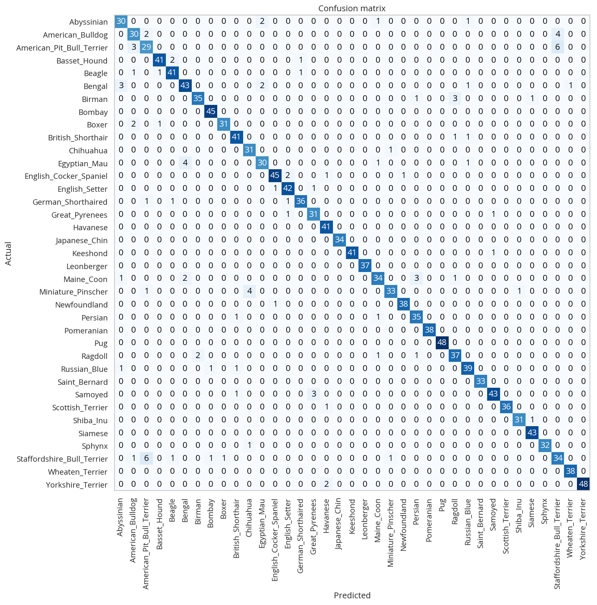
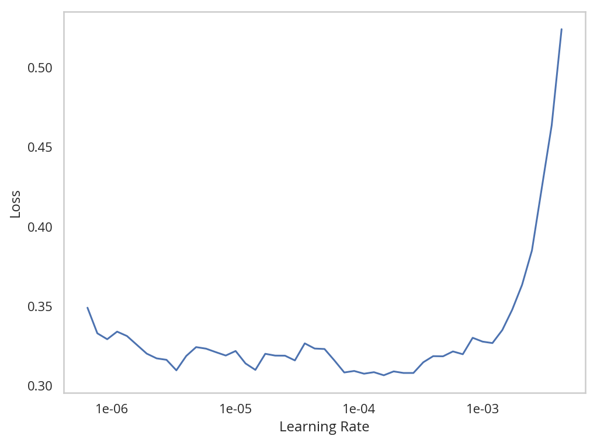

Dog and Cat Breed Classification (What's Your Pet?)
Table of Contents
Departure
This is lesson one from the fastai course Practical Deep Learning for Coders, v3, which I assume is the third version of the course, and not a reference to a Japanese television show.
Imports
We are going to work with the fastai V1 library which sits on top of Pytorch 1.0. The fastai library provides many useful functions that enable us to quickly and easily build neural networks and train our models.
Python
from functools import partial
from pathlib import Path
import os
import re
PyPi
fastai recommends using * to import everything, but I'd like to know where everything comes from and not import something that might conflict with my naming conventions so I'm going to (at least try to) import things individually.
from dotenv import load_dotenv
from fastai.datasets import untar_data
from fastai.train import ClassificationInterpretation
from fastai.vision.data import get_image_files, imagenet_stats, ImageDataBunch
from fastai.vision.learner import cnn_learner
from fastai.vision.models import resnet34
from fastai.vision.transform import get_transforms
from fastai.metrics import error_rate
from tabulate import tabulate
import holoviews
import matplotlib.pyplot as pyplot
import numpy
import pandas
import seaborn
My Stuff
from graeae.tables import CountPercentage
from graeae.timers import Timer
from graeae.visualization import EmbedHoloview
Some Setup
The Random Seed
To make this reproducible we'll set the random seed in numpy.
numpy.random.seed(2)
Batch Size
If you're using a computer with an unusually small GPU, you may get an out of memory error when running this notebook. If this happens, reduce the batch size.
batch_size = 64 # = 16 change this if you run out of memory.
The Path
load_dotenv(".env", override=True)
DATA_PATH = Path(os.environ.get("OXFORD_PET_DATASET")).expanduser()
Plotting
Matplotlib
get_ipython().run_line_magic('matplotlib', 'inline')
get_ipython().run_line_magic('config', "InlineBackend.figure_format = 'retina'")
seaborn.set(style="whitegrid",
rc={"axes.grid": False,
"font.family": ["sans-serif"],
"font.sans-serif": ["Open Sans", "Latin Modern Sans", "Lato"],
"figure.figsize": (8, 6)},
font_scale=1)
The Bokeh
holoviews.extension("bokeh")
SLUG = "dog-and-cat-breed-classification"
OUTPUT_FOLDER = Path("../../files/posts/fastai/" + SLUG)
Embed = partial(EmbedHoloview, folder_path=OUTPUT_FOLDER)
class Plot:
width = 1000
height = 800
The Timer
TIMER = Timer()
Tabulate
ORG_TABLE = partial(tabulate, headers="keys",
showindex=False,
tablefmt="orgtbl")
Initiation
Downloading the Data
We are going to use the Oxford-IIIT Pet Dataset by O. M. Parkhi et al., 2012 which features 12 cat breeds and 25 dogs breeds. Our model will need to learn to differentiate between these 37 distinct categories. According to their paper, the best accuracy they could get in 2012 was 59.21%, using a complex model that was specific to pet detection, with separate "Image", "Head", and "Body" models for the pet photos. Let's see how accurate we can be using deep learning.
We are going to use the untar_data function to which we must pass a URL as an argument and which will download and extract the data.
help(untar_data)
Help on function untar_data in module fastai.datasets:
untar_data(url:str, fname:Union[pathlib.Path, str]=None, dest:Union[pathlib.Path, str]=None, data=True, force_download=False) -> pathlib.Path
Download `url` to `fname` if it doesn't exist, and un-tgz to folder `dest`.
This data set is 774 Megabytes and given my over-priced yet still incredibly slow CenturyLink speeds I found downloading it from the fastai datasets page a little more satisfactory, since the progress widget that runs during the download when untar_data downloads the dataset doesn't show up in emacs.
assert DATA_PATH.is_dir()
print(DATA_PATH)
/home/athena/data/datasets/images/oxford-iiit-pet
I didn't know it, but Paths have an ls method (so far as I could see this isn't in python's documentation).
print(DATA_PATH.ls())
[PosixPath('/home/athena/data/datasets/images/oxford-iiit-pet/README.org'), PosixPath('/home/athena/data/datasets/images/oxford-iiit-pet/images'), PosixPath('/home/athena/data/datasets/images/oxford-iiit-pet/annotations')]
Here's another trick I didn't know about, instead of using the joinpath method you can just use a forward-slash.
path_to_annotations = DATA_PATH/'annotations'
path_to_images = DATA_PATH/'images'
Looking At the Data
The first thing we do when we approach a problem is to take a look at the data. We always need to understand very well what the problem is and what the data looks like before we can figure out how to solve it. Taking a look at the data means understanding how the data directories are structured, what the labels are and what some sample images look like.
The main difference between the handling of image classification datasets is the way labels are stored. In this particular dataset, labels are stored in the filenames themselves. We will need to extract them to be able to classify the images into the correct categories. Fortunately, the fastai library has a handy function made exactly for this, ImageDataBunch.from_name_re gets the labels from the filenames using a regular expression.
First we'll get a list of the files in the images folder using get_image_files.
file_names = get_image_files(path_to_images)
for path in file_names[:5]:
print(path.name)
havanese_128.jpg american_bulldog_181.jpg Ragdoll_196.jpg havanese_40.jpg Birman_108.jpg
Later on we're going to use the labels when we inspect the model so I'm going to make the case standardized.
UNDERSCORE, SPACE = "_", " "
for path in file_names:
name, extension = os.path.splitext(path.name)
name = name.replace(UNDERSCORE, SPACE).title()
file_name = (name + extension).replace(SPACE, UNDERSCORE)
target = path.parent.joinpath(file_name)
path.rename(target)
file_names = get_image_files(path_to_images)
for path in file_names[:2]:
print(path.name)
Boxer_20.jpg Saint_Bernard_195.jpg
This is the pattern to match the file-name.
end_of_line = "$"
one_or_more = "+"
digit = r"\d"
index = rf"{digit}{one_or_more}"
forward_slash = "/"
anything_but_a_slash = f"[^{forward_slash}]"
label = f'({anything_but_a_slash}{one_or_more})'
file_extension = ".jpg"
expression = rf'{forward_slash}{label}{UNDERSCORE}{index}{file_extension}{end_of_line}'
test = "/home/athena/data/datasets/images/oxford-iiit-pet/images/Havanese_128.jpg"
assert re.search(expression, test).groups()[0] == "Havanese"
The reason for the forward slash at the beginning of the expression is that we're passing in the entire path to each image, not just the name of the image.
Here's the arguments we need to pass in
print(help(ImageDataBunch.from_name_re))
Help on method from_name_re in module fastai.vision.data:
from_name_re(path:Union[pathlib.Path, str], fnames:Collection[pathlib.Path], pat:str, valid_pct:float=0.2, **kwargs) method of builtins.type instance
Create from list of `fnames` in `path` with re expression `pat`.
None
data = ImageDataBunch.from_name_re(path_to_images,
file_names,
expression,
ds_tfms=get_transforms(),
size=224,
bs=batch_size
).normalize(imagenet_stats)
One of the arguments we passed in isn't particularly obviously named, unless you already know about applying transforms to images, but here's what we passed to it.
print(help(get_transforms))
Help on function get_transforms in module fastai.vision.transform:
get_transforms(do_flip:bool=True, flip_vert:bool=False, max_rotate:float=10.0, max_zoom:float=1.1, max_lighting:float=0.2, max_warp:float=0.2, p_affine:float=0.75, p_lighting:float=0.75, xtra_tfms:Union[Collection[fastai.vision.image.Transform], NoneType]=None) -> Collection[fastai.vision.image.Transform]
Utility func to easily create a list of flip, rotate, `zoom`, warp, lighting transforms.
None
get_transforms adds random changes to the images to help with our training.
We also added a call to normalize which sets the mean and standard deviation of the images to match those of the images used to train the model that we're going to use (ResNet).
The show_batch function is a simple way to show some of the images. It retrieves them randomly so calling the method repeatedly will pull up different images. Unfortunately you can't pass in a figure or axes so it isn't easily configurable.
data.show_batch(rows=3, figsize=(7,6))

print(data)
ImageDataBunch; Train: LabelList (5912 items) x: ImageList Image (3, 224, 224),Image (3, 224, 224),Image (3, 224, 224),Image (3, 224, 224),Image (3, 224, 224) y: CategoryList Boxer,Saint_Bernard,Saint_Bernard,English_Cocker_Spaniel,Ragdoll Path: /home/athena/data/datasets/images/oxford-iiit-pet/images; Valid: LabelList (1478 items) x: ImageList Image (3, 224, 224),Image (3, 224, 224),Image (3, 224, 224),Image (3, 224, 224),Image (3, 224, 224) y: CategoryList British_Shorthair,Keeshond,Saint_Bernard,Siamese,British_Shorthair Path: /home/athena/data/datasets/images/oxford-iiit-pet/images; Test: None
So it looks like the ImageDataBunch created a training and a validation set and each of the images has three channels and is 224 x 224 pixels.
Training: resnet34
Now we will start training our model. We will use a convolutional neural network backbone and a fully connected head with a single hidden layer as a classifier. Don't know what these things mean? Not to worry, we will dive deeper in the coming lessons. For the moment you need to know that we are building a model which will take images as input and will output the predicted probability for each of the categories (in this case, it will have 37 outputs).
We will train for 4 epochs (4 cycles through all our data).
First we'll load the model to train into the cnn_learner. If you look at the fast ai code they are importing the resnet34 model from pytorch's torchvision.
learn = cnn_learner(data, resnet34, metrics=error_rate)
#+RESULTS
Downloading: "https://download.pytorch.org/models/resnet34-333f7ec4.pth" to /home/athena/.torch/models/resnet34-333f7ec4.pth 87306240it [00:26, 3321153.99it/s]
As you can see, it downloaded the stored model parameters from pytorch. This is because I've never downloaded this particular model before if you run it again it shouldn't need to re-download it. Since this is a pytorch model we can look at it's represetantion to see the architecture of the network.
print(learn.model)
Sequential(
(0): Sequential(
(0): Conv2d(3, 64, kernel_size=(7, 7), stride=(2, 2), padding=(3, 3), bias=False)
(1): BatchNorm2d(64, eps=1e-05, momentum=0.1, affine=True, track_running_stats=True)
(2): ReLU(inplace)
(3): MaxPool2d(kernel_size=3, stride=2, padding=1, dilation=1, ceil_mode=False)
(4): Sequential(
(0): BasicBlock(
(conv1): Conv2d(64, 64, kernel_size=(3, 3), stride=(1, 1), padding=(1, 1), bias=False)
(bn1): BatchNorm2d(64, eps=1e-05, momentum=0.1, affine=True, track_running_stats=True)
(relu): ReLU(inplace)
(conv2): Conv2d(64, 64, kernel_size=(3, 3), stride=(1, 1), padding=(1, 1), bias=False)
(bn2): BatchNorm2d(64, eps=1e-05, momentum=0.1, affine=True, track_running_stats=True)
)
(1): BasicBlock(
(conv1): Conv2d(64, 64, kernel_size=(3, 3), stride=(1, 1), padding=(1, 1), bias=False)
(bn1): BatchNorm2d(64, eps=1e-05, momentum=0.1, affine=True, track_running_stats=True)
(relu): ReLU(inplace)
(conv2): Conv2d(64, 64, kernel_size=(3, 3), stride=(1, 1), padding=(1, 1), bias=False)
(bn2): BatchNorm2d(64, eps=1e-05, momentum=0.1, affine=True, track_running_stats=True)
)
(2): BasicBlock(
(conv1): Conv2d(64, 64, kernel_size=(3, 3), stride=(1, 1), padding=(1, 1), bias=False)
(bn1): BatchNorm2d(64, eps=1e-05, momentum=0.1, affine=True, track_running_stats=True)
(relu): ReLU(inplace)
(conv2): Conv2d(64, 64, kernel_size=(3, 3), stride=(1, 1), padding=(1, 1), bias=False)
(bn2): BatchNorm2d(64, eps=1e-05, momentum=0.1, affine=True, track_running_stats=True)
)
)
(5): Sequential(
(0): BasicBlock(
(conv1): Conv2d(64, 128, kernel_size=(3, 3), stride=(2, 2), padding=(1, 1), bias=False)
(bn1): BatchNorm2d(128, eps=1e-05, momentum=0.1, affine=True, track_running_stats=True)
(relu): ReLU(inplace)
(conv2): Conv2d(128, 128, kernel_size=(3, 3), stride=(1, 1), padding=(1, 1), bias=False)
(bn2): BatchNorm2d(128, eps=1e-05, momentum=0.1, affine=True, track_running_stats=True)
(downsample): Sequential(
(0): Conv2d(64, 128, kernel_size=(1, 1), stride=(2, 2), bias=False)
(1): BatchNorm2d(128, eps=1e-05, momentum=0.1, affine=True, track_running_stats=True)
)
)
(1): BasicBlock(
(conv1): Conv2d(128, 128, kernel_size=(3, 3), stride=(1, 1), padding=(1, 1), bias=False)
(bn1): BatchNorm2d(128, eps=1e-05, momentum=0.1, affine=True, track_running_stats=True)
(relu): ReLU(inplace)
(conv2): Conv2d(128, 128, kernel_size=(3, 3), stride=(1, 1), padding=(1, 1), bias=False)
(bn2): BatchNorm2d(128, eps=1e-05, momentum=0.1, affine=True, track_running_stats=True)
)
(2): BasicBlock(
(conv1): Conv2d(128, 128, kernel_size=(3, 3), stride=(1, 1), padding=(1, 1), bias=False)
(bn1): BatchNorm2d(128, eps=1e-05, momentum=0.1, affine=True, track_running_stats=True)
(relu): ReLU(inplace)
(conv2): Conv2d(128, 128, kernel_size=(3, 3), stride=(1, 1), padding=(1, 1), bias=False)
(bn2): BatchNorm2d(128, eps=1e-05, momentum=0.1, affine=True, track_running_stats=True)
)
(3): BasicBlock(
(conv1): Conv2d(128, 128, kernel_size=(3, 3), stride=(1, 1), padding=(1, 1), bias=False)
(bn1): BatchNorm2d(128, eps=1e-05, momentum=0.1, affine=True, track_running_stats=True)
(relu): ReLU(inplace)
(conv2): Conv2d(128, 128, kernel_size=(3, 3), stride=(1, 1), padding=(1, 1), bias=False)
(bn2): BatchNorm2d(128, eps=1e-05, momentum=0.1, affine=True, track_running_stats=True)
)
)
(6): Sequential(
(0): BasicBlock(
(conv1): Conv2d(128, 256, kernel_size=(3, 3), stride=(2, 2), padding=(1, 1), bias=False)
(bn1): BatchNorm2d(256, eps=1e-05, momentum=0.1, affine=True, track_running_stats=True)
(relu): ReLU(inplace)
(conv2): Conv2d(256, 256, kernel_size=(3, 3), stride=(1, 1), padding=(1, 1), bias=False)
(bn2): BatchNorm2d(256, eps=1e-05, momentum=0.1, affine=True, track_running_stats=True)
(downsample): Sequential(
(0): Conv2d(128, 256, kernel_size=(1, 1), stride=(2, 2), bias=False)
(1): BatchNorm2d(256, eps=1e-05, momentum=0.1, affine=True, track_running_stats=True)
)
)
(1): BasicBlock(
(conv1): Conv2d(256, 256, kernel_size=(3, 3), stride=(1, 1), padding=(1, 1), bias=False)
(bn1): BatchNorm2d(256, eps=1e-05, momentum=0.1, affine=True, track_running_stats=True)
(relu): ReLU(inplace)
(conv2): Conv2d(256, 256, kernel_size=(3, 3), stride=(1, 1), padding=(1, 1), bias=False)
(bn2): BatchNorm2d(256, eps=1e-05, momentum=0.1, affine=True, track_running_stats=True)
)
(2): BasicBlock(
(conv1): Conv2d(256, 256, kernel_size=(3, 3), stride=(1, 1), padding=(1, 1), bias=False)
(bn1): BatchNorm2d(256, eps=1e-05, momentum=0.1, affine=True, track_running_stats=True)
(relu): ReLU(inplace)
(conv2): Conv2d(256, 256, kernel_size=(3, 3), stride=(1, 1), padding=(1, 1), bias=False)
(bn2): BatchNorm2d(256, eps=1e-05, momentum=0.1, affine=True, track_running_stats=True)
)
(3): BasicBlock(
(conv1): Conv2d(256, 256, kernel_size=(3, 3), stride=(1, 1), padding=(1, 1), bias=False)
(bn1): BatchNorm2d(256, eps=1e-05, momentum=0.1, affine=True, track_running_stats=True)
(relu): ReLU(inplace)
(conv2): Conv2d(256, 256, kernel_size=(3, 3), stride=(1, 1), padding=(1, 1), bias=False)
(bn2): BatchNorm2d(256, eps=1e-05, momentum=0.1, affine=True, track_running_stats=True)
)
(4): BasicBlock(
(conv1): Conv2d(256, 256, kernel_size=(3, 3), stride=(1, 1), padding=(1, 1), bias=False)
(bn1): BatchNorm2d(256, eps=1e-05, momentum=0.1, affine=True, track_running_stats=True)
(relu): ReLU(inplace)
(conv2): Conv2d(256, 256, kernel_size=(3, 3), stride=(1, 1), padding=(1, 1), bias=False)
(bn2): BatchNorm2d(256, eps=1e-05, momentum=0.1, affine=True, track_running_stats=True)
)
(5): BasicBlock(
(conv1): Conv2d(256, 256, kernel_size=(3, 3), stride=(1, 1), padding=(1, 1), bias=False)
(bn1): BatchNorm2d(256, eps=1e-05, momentum=0.1, affine=True, track_running_stats=True)
(relu): ReLU(inplace)
(conv2): Conv2d(256, 256, kernel_size=(3, 3), stride=(1, 1), padding=(1, 1), bias=False)
(bn2): BatchNorm2d(256, eps=1e-05, momentum=0.1, affine=True, track_running_stats=True)
)
)
(7): Sequential(
(0): BasicBlock(
(conv1): Conv2d(256, 512, kernel_size=(3, 3), stride=(2, 2), padding=(1, 1), bias=False)
(bn1): BatchNorm2d(512, eps=1e-05, momentum=0.1, affine=True, track_running_stats=True)
(relu): ReLU(inplace)
(conv2): Conv2d(512, 512, kernel_size=(3, 3), stride=(1, 1), padding=(1, 1), bias=False)
(bn2): BatchNorm2d(512, eps=1e-05, momentum=0.1, affine=True, track_running_stats=True)
(downsample): Sequential(
(0): Conv2d(256, 512, kernel_size=(1, 1), stride=(2, 2), bias=False)
(1): BatchNorm2d(512, eps=1e-05, momentum=0.1, affine=True, track_running_stats=True)
)
)
(1): BasicBlock(
(conv1): Conv2d(512, 512, kernel_size=(3, 3), stride=(1, 1), padding=(1, 1), bias=False)
(bn1): BatchNorm2d(512, eps=1e-05, momentum=0.1, affine=True, track_running_stats=True)
(relu): ReLU(inplace)
(conv2): Conv2d(512, 512, kernel_size=(3, 3), stride=(1, 1), padding=(1, 1), bias=False)
(bn2): BatchNorm2d(512, eps=1e-05, momentum=0.1, affine=True, track_running_stats=True)
)
(2): BasicBlock(
(conv1): Conv2d(512, 512, kernel_size=(3, 3), stride=(1, 1), padding=(1, 1), bias=False)
(bn1): BatchNorm2d(512, eps=1e-05, momentum=0.1, affine=True, track_running_stats=True)
(relu): ReLU(inplace)
(conv2): Conv2d(512, 512, kernel_size=(3, 3), stride=(1, 1), padding=(1, 1), bias=False)
(bn2): BatchNorm2d(512, eps=1e-05, momentum=0.1, affine=True, track_running_stats=True)
)
)
)
(1): Sequential(
(0): AdaptiveConcatPool2d(
(ap): AdaptiveAvgPool2d(output_size=1)
(mp): AdaptiveMaxPool2d(output_size=1)
)
(1): Flatten()
(2): BatchNorm1d(1024, eps=1e-05, momentum=0.1, affine=True, track_running_stats=True)
(3): Dropout(p=0.25)
(4): Linear(in_features=1024, out_features=512, bias=True)
(5): ReLU(inplace)
(6): BatchNorm1d(512, eps=1e-05, momentum=0.1, affine=True, track_running_stats=True)
(7): Dropout(p=0.5)
(8): Linear(in_features=512, out_features=37, bias=True)
)
)
That's a pretty big network, but the main thing to notice is the last layer, which has 37 out_features which corresponds to the number of breeds we have in our data-set.
Now we need to train it using the fit_one_cycle method. At first I thought 'one cycle' meant just one pass through the batches but according to the documentation, this is a reference to a training method called the 1Cycle Policy proposed by Leslie N. Smith that changes the hyperparameters to make the model train faster.
with TIMER:
learn.fit_one_cycle(4)
Started: 2019-04-14 18:41:37.154885 Ended: 2019-04-14 18:43:34.734434 Elapsed: 0:01:57.579549
Now we can store the parameters for the trained model.
learn.save('stage-1')
Results
Let's see what results we have got.
We will first see which were the categories that the model most confused with one another. We will try to see if what the model predicted was reasonable or not. In this case the mistakes look reasonable (none of the mistakes seems obviously naive). This is an indicator that our classifier is working correctly.
Furthermore, when we plot the confusion matrix, we can see that the distribution is heavily skewed: the model makes the same mistakes over and over again but it rarely confuses other categories. This suggests that it just finds it difficult to distinguish some specific categories between each other; this is normal behaviour.
The ClassificationInterpretation class contains methods to help look at how the model did.
interpreter = ClassificationInterpretation.from_learner(learn)
The top_losses method returns a tuple of the highest losses along with the indices of the data that gave those losses. By default it actually gives all the losses sorted from largest to smallest, but you could pass in an integer to limit how much it returns.
losses, indexes = interpreter.top_losses()
print(losses)
print(indexes)
assert len(data.valid_ds)==len(losses)==len(indexes)
tensor([6.8920e+00, 5.1477e+00, 4.9542e+00, ..., 5.7220e-06, 3.8147e-06,
3.8147e-06])
tensor([ 785, 195, 1261, ..., 1097, 315, 1228])
plot = holoviews.Distribution(losses).opts(title="Loss Distribution",
xlabel="Loss",
width=Plot.width,
height=Plot.height)
Embed(plot=plot, file_name="loss_distribution")()
Although it looks like there are negative losses, that's just the way the distribution works out.
print(losses.max())
print(losses.min())
tensor(6.8920) tensor(3.8147e-06)
bins = pandas.cut(losses.tolist(), bins=10).value_counts().reset_index()
print(ORG_TABLE(bins, headers="Range Count".split()))
| Range | Count |
|---|---|
| (-0.00689, 0.689] | 1355 |
| (0.689, 1.378] | 52 |
| (1.378, 2.068] | 39 |
| (2.068, 2.757] | 16 |
| (2.757, 3.446] | 5 |
| (3.446, 4.135] | 3 |
| (4.135, 4.824] | 3 |
| (4.824, 5.514] | 4 |
| (5.514, 6.203] | 0 |
| (6.203, 6.892] | 1 |
Alternatively we can plot the images that had the highest losses.
interpreter.plot_top_losses(9, figsize=(15,11))

It looks like the ones that had the most loss had some kind of weird flare effect applied to the image. Now that we've used it, maybe we can see how we're supposed to call plot_top_losses.
print(help(interpreter.plot_top_losses))
Help on method _cl_int_plot_top_losses in module fastai.vision.learner:
_cl_int_plot_top_losses(k, largest=True, figsize=(12, 12), heatmap:bool=True, heatmap_thresh:int=16, return_fig:bool=None) -> Union[matplotlib.figure.Figure, NoneType] method of fastai.train.ClassificationInterpretation instance
Show images in `top_losses` along with their prediction, actual, loss, and probability of actual class.
None
Note: in the original notebook they were using a function called doc, which tries to open another window and will thus hang when run in emacs. They really want you to use jupyter.
interpreter.plot_confusion_matrix(figsize=(12,12), dpi=60)

If you compare the images with the worst losses to the confusion matrix you'll notice that they don't seem to correlate - the worst losses were one-offs, probably due to the flare effect. The most confused was the Ragdoll being confused for a Birman, but, as noted in the lecture, distinguishing them is hard for people too.
print(ORG_TABLE(interpreter.most_confused(min_val=2),
headers="Actual Predicted Count".split()))
| Actual | Predicted | Count |
|---|---|---|
| Ragdoll | Birman | 7 |
| Bengal | Egyptian_Mau | 5 |
| British_Shorthair | Russian_Blue | 4 |
| Chihuahua | Miniature_Pinscher | 4 |
| Great_Pyrenees | Samoyed | 4 |
| American_Pit_Bull_Terrier | Staffordshire_Bull_Terrier | 3 |
| Basset_Hound | Beagle | 3 |
| Bengal | Abyssinian | 3 |
| Birman | Ragdoll | 3 |
| Egyptian_Mau | Bengal | 3 |
| Maine_Coon | Bengal | 3 |
| Staffordshire_Bull_Terrier | American_Pit_Bull_Terrier | 3 |
| Abyssinian | Sphynx | 2 |
| American_Pit_Bull_Terrier | German_Shorthaired | 2 |
| Birman | Persian | 2 |
| Boxer | American_Pit_Bull_Terrier | 2 |
| Boxer | Staffordshire_Bull_Terrier | 2 |
| Newfoundland | German_Shorthaired | 2 |
| Persian | Maine_Coon | 2 |
| Russian_Blue | Abyssinian | 2 |
| Russian_Blue | British_Shorthair | 2 |
| Saint_Bernard | American_Bulldog | 2 |
| Scottish_Terrier | Havanese | 2 |
| Siamese | Birman | 2 |
| Yorkshire_Terrier | Havanese | 2 |
It doesn't look too bad, actually, other that the first 5 entries, maybe.
Unfreezing, fine-tuning, and learning rates
Since our model is working as we expect it to, we will unfreeze our model and train some more.
learn.unfreeze()
Since we are using a pre-trained model we normally freeze all but the last layer to do transfer learning, by unfreezing the mode we'll train all the layers to our dataset.
with TIMER:
learn.fit_one_cycle(1)
Started: 2019-04-14 19:27:34.028566 Ended: 2019-04-14 19:28:15.295003 Elapsed: 0:00:41.266437
Now we save it again.
learn.load('stage-1');
Now we're going to use the lr_find method to find the best learning rate.
with TIMER:
learn.lr_find()
Started: 2019-04-14 19:34:59.954658
LR Finder is complete, type {learner_name}.recorder.plot() to see the graph.
Ended: 2019-04-14 19:35:26.561592
Elapsed: 0:00:26.606934
learn.recorder.plot()

So, it's kind of hard to see the exact number, but you can see that somewhere around a learning rate of 0.0001 we get a good loss and then after that the loss starts to go way up.
So next we're going to re-train it using an interval that hopefully gives us the best loss.
learn.unfreeze()
with TIMER:
learn.fit_one_cycle(2, max_lr=slice(1e-6,1e-4))
Started: 2019-04-14 20:48:40.194329 Ended: 2019-04-14 20:50:02.024671 Elapsed: 0:01:21.830342
data = ImageDataBunch.from_name_re(path_img, fnames, pat, ds_tfms=get_transforms(), size=299, bs=bs//2).normalize(imagenet_stats)
learn = cnn_learner(data, models.resnet50, metrics=error_rate)
learn.lr_find() learn.recorder.plot()
learn.fit_one_cycle(8)
learn.save('stage-1-50')
learn.unfreeze() learn.fit_one_cycle(3, max_lr=slice(1e-6,1e-4))
learn.load('stage-1-50');
interp = ClassificationInterpretation.from_learner(learn)
interp.most_confused(min_val=2)
path = untar_data(URLs.MNIST_SAMPLE); path
tfms = get_transforms(do_flip=False) data = ImageDataBunch.from_folder(path, ds_tfms=tfms, size=26)
data.show_batch(rows=3, figsize=(5,5))
learn = cnn_learner(data, models.resnet18, metrics=accuracy) learn.fit(2)
df = pd.read_csv(path/'labels.csv') df.head()
data = ImageDataBunch.from_csv(path, ds_tfms=tfms, size=28)
data.show_batch(rows=3, figsize=(5,5)) data.classes
data = ImageDataBunch.from_df(path, df, ds_tfms=tfms, size=24) data.classes
fn_paths = [path/name for name in df['name']]; fn_paths[:2]
pat = r"(\d)\d+\.png$" data = ImageDataBunch.from_name_re(path, fn_paths, pat=pat, ds_tfms=tfms, size=24) data.classes
data = ImageDataBunch.from_name_func(path, fn_paths, ds_tfms=tfms, size=24, label_func = lambda x: '3' if '3' in str(x) else '7') data.classes
labels = [('3' if '3' in str(x) else '7') for x in fn_paths] labels[:5]
data = ImageDataBunch.from_lists(path, fn_paths, labels=labels, ds_tfms=tfms, size=24) data.classes